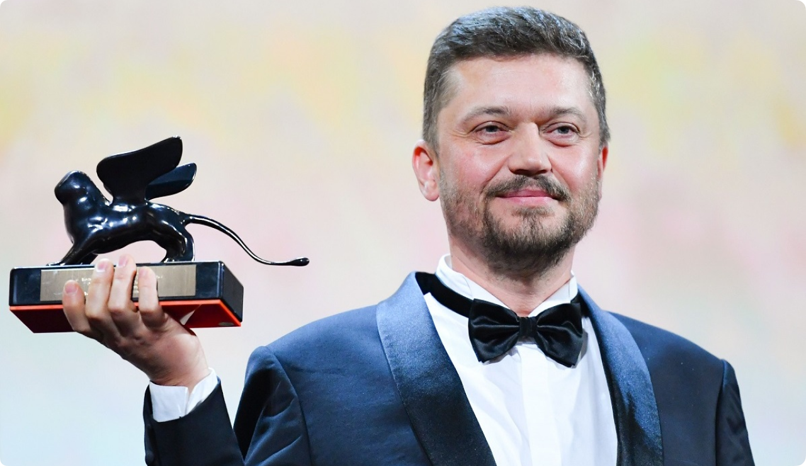

Васянович Валентин
Загальна інформація
Валентин Миколайович Васянович (нар. 21 липня 1971, Житомир) — український режисер, сценарист та продюсер. Лауреат конкурсної програми Orizzonti / Горизонти (2019; кінострічка «Атлантида») та номінант головної нагороди Leone d'Oro / Золотий лев (2021; кінострічка «Відблиск») Венеційського кінофестивалю. Лауреат Національної премії України імені Тараса Шевченка (2019; кінострічка «Атлантида»).

Біографія
Народився в 1971 році в Житомирі. Закінчив Музичне училище імені Віктора Косенка. Професійний шлях у кіно починав у Національному університеті театрального мистецтва ім. Карпенка-Карого, який закінчив у 1995 році з дипломом оператора, а в 2000 році — з дипломом режисера документального фільму. Займався в творчих майстернях українських кінематографістів Олексія Прокопенка та Олександра Коваля. У 2006—2007 роках навчався у Школі режисерської майстерності Анджея Вайди, Польща.
Громадська позиція
Васянович публічно виступає за розвиток українськомовного контенту в Україні, та за відвоювання медіапростору від засилля російськомовного контенту. «Суржик — це рак української мови, він є результатом російської експансії в Україну», — зазначає режисер.
Фільмографія
- 1. 2021 Відблиск
- 2. 2019 Атлантида
- 3. 2017 Згода
- 4. 2017 Рівень чорного
- 5. 2014 Плем'я
- 6. 2014 Присмерк